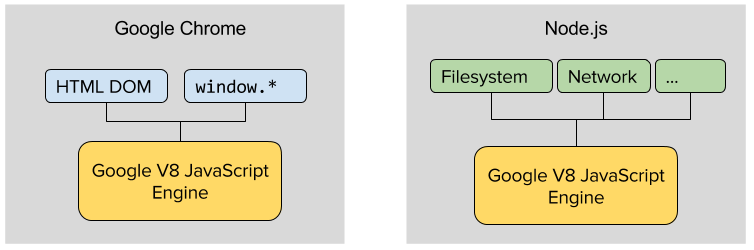
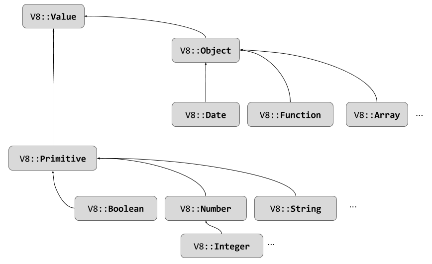

In this first chapter we're going to dive right into making a few really simple Node.js addons in C++. The examples are limited, so we don't need to tackle too much of the V8 API too soon. They really serve as a launching point into the rest of the book, as we go through them I'll point you to different chapters throughout the book where you can get more details on various topics.
I assume you have a working knowledge of C++ and JavaScript - at least from a syntax perspective. If you are a JavaScript developer who has never written C++, some of this content is going to take some time to digest. If you are C++ developer, with little JavaScript experience, you likely will have it a bit easier - simply because most of our code will be C++. Nevertheless, this chapter will be important for you since it will give you some insight as to how JavaScript actually works with Node.js and the V8 engine.
Before we start - let's answer the most obvious question... why would we want to build a C++ addon and call it from JavaScript?
First off, recognize that while raw speed is probably the knee-jerk reaction - especially if you are C++ developer - make sure you carefully consider this. C++ certainly runs faster than JavaScript - but it doesn't outperform it as much as some people like to believe. JavaScript doesn't have a "speed". The JavaScript interpreter, which translates the code into executable binary instructions, determines the speed - and that program is usually a web browser. Up until around 2008, execution time of JavaScript was extremely slow compared to C++ - however things have changed since then. Modern JavaScript engines (we don't like calling them interpreters, since they are actually compiling code and doing all sorts of optimization that we don't normally associate with that term) have achieved dramatic speed gains - and can at times achieve performance rivaling C++ for certain tasks. While at the time of this writing (2016) Node.js only runs on the V8 JavaScript engine from Chrome, other JavaScript engines such as Mozilla's SpiderMonkey and Microsoft's Chakra are pushing the speed boundaries even further on the front end and there are projects aimed at targeting them for Node.js as well. Don't jump to conclusions - before writing a C++ addon for speed, do some testing in pure JavaScript first.. you might be surprised!
All that said, C++ should deliver at least a 2x runtime improvement over JavaScript for most CPU-bound tasks. This can be even more so if your algorithms can run faster by optimizing on low level architecture features (cache size, etc.) that aren't available in JavaScript. So as a first reason... yes, if you've got a critical CPU-heavy task to complete in a Node.js application - building a C++ addon is likely a great choice[1].
A second reason for writing a C++ addon - and one that I'd argue is likely more common - is that you already have some C or C++ code, that you want to integrate into Node.js. Node.js is a great platform for building web applications, micro-services, and other I/O tasks - but sometimes when adopting Node.js you need to migrate over C++ code that is already important to your application or business. You don't need to rewrite it in JavaScript - you can turn it into an addon! If you are in this situation, be sure sure to review Appendix A as well as the core chapters in this book - they cover alternative ways of integrating existing C++ code.
So we know we want to develop some C++ code that can be added into (it's an addon, after all) our JavaScript code. What mechanism does JavaScript have for organizing packages? If you've been paying attention to the JavaScript world on the front-end, you know that while standards are emerging for this, JavaScript has always been plagued by a lack of packaging mechanism. Node.js, however, already has such a mechanism built in[2].
In Node.js, modules represent individual units of code. Modules have a 1:1 relationship with files - one module goes into one file. Any JavaScript file (when run in Node.js) can be a module, all it needs to do is add properties (or functions) to the exports property, which is implicitly defined by Node.js.
// hello_module.js
exports.say_hello = function() {
return "hello world";
}
To import this module into another script file, we utilize the require method, with a relative path to the module (without a file extension).
// hello.js
var hello = require("./hello_module");
console.log(hello.say_hello());
The returned object from require is the exports object - so we can now call say_hello on that object.
$ node hello.js
hello world
One of the things that makes this import/module system all the more powerful is npm - the Node.js package manager. With an account on npmjs.com, you can publish your own modules, and by utilizing npm install you can easily pull down any one of the tens of thousands of open source modules that make up the Node.js ecosystem. If you've built Node.js apps before you've likely installed modules using npm many times. We won't talk to much more about npm until Chapter 8 - but if you are unfamiliar with it - you might want to read up on it before you continue.
OK, so if you didn't already know how all those module's you've been plugging into your Node.js apps were built - now you do! What you might have also observed when including modules is that some of them seem to require npm to do a bunch of work during the install process. A good example of this is bcrypt, a library for doing cryptographic hashing:
$ npm install bcrypt
-
> bcrypt@0.8.5 install /home/sfrees/projects/tmp/node_modules/bcrypt
> node-gyp rebuild
>
make: Entering directory `/home/sfrees/projects/tmp/node_modules/bcrypt/build'
CXX(target) Release/obj.target/bcrypt_lib/src/blowfish.o
CXX(target) Release/obj.target/bcrypt_lib/src/bcrypt.o
CXX(target) Release/obj.target/bcrypt_lib/src/bcrypt_node.o
SOLINK_MODULE(target) Release/obj.target/bcrypt_lib.node
COPY Release/bcrypt_lib.node
make: Leaving directory `/home/sfrees/projects/tmp/node_modules/bcrypt/build'
bcrypt@0.8.5 node_modules/bcrypt
|__ bindings@1.2.1
|__ nan@2.0.5
A quick look at that output and you'll see the tell tale signs of a Node.js native addon written in C++. The third line of the output shows us that bcrypt is issuing a node-gyp rebuild command, and we can see that a Makefile is being executed to build CXX targets. bcrypt is largely written in C++ .
Using bcrypt is easy - there is no difference between using a native C++ addon and a normal JS module - you just require it.
var bcrypt = require('bcrypt');
bcrypt.genSalt(10, function(err, salt) {
bcrypt.hash('B4c0/\/', salt, function(err, hash) {
// Store hash in your password DB.
});
})
Of course, in order for your own addon (or JS package) to be installed and included like this, you need to package it up and publish it - which I'll show you how to do in Chapter 8.
We know why we'd like to write addons in C++, and we know there are plenty of modules out there that can be seamlessly integrated into our Node.js applications. So the next question is, how is this done? What is providing this nice bridge between these two very different languages? The answer, of course, is the Google V8 JavaScript library - the open source JavaScript execution engine that ships with the Google Chrome web browser. V8 is a C++ library which provides a high performance execution environment for JavaScript code. When V8 shipped as part of Chrome in 2008 it was envisioned as a library for executing JavaScript loaded in the browser, at the request of the loaded web document - but things changed in 2009 when Ryan Dahl created Node.js.
Node.js has brought JavaScript server-side development into the mainstream. It is built on top of V8, but instead of being a web browser, it provides access to the underlying operating system. Before you put your security hat on, remember that we aren't talking about arbitrary JavaScript coming from the web - we're talking about locally developed (or at least willfully copied) code. Essentially, Node.js gives JavaScript the system API calls that languages like C, C++, Java, Python, etc. have always had.
Node.js is really just glue and support code around a few key components:
Of course, that's a simplification - but the idea is that Node.js plays a similar role as the Chrome web browser does (see Figure 1). Where a web browser like Chrome (written in C++) exposes host objects like window and the HTML DOM to JavaScript executing within V8, Node.js exposes low-level I/O - such as the file system, network, threading, etc. This is why Node.js is perfect for server development - it has provided access to the OS from JavaScript.

So now we see that the JavaScript interpreter (actually, it's more like a JIT compiler) is just a C++ library. You can actually embed V8 in your own C++ applications to execute JavaScript code contained in regular C++ strings - without Node.js. If you want to take a look - check out the examples in Google's Embedder's Guide.
While nice (and extremely useful in many situations), we're not really interested in using V8 directly like this. We are more interested in the fact that V8 provides a C++ API into the JavaScript that is executing. This API allows us to write C++ code that can be loaded by Node.js - and this C++ code becomes fully callable from your JavaScript code. Along the same lines, the API allows us to hold resources allocated by JavaScript in C++, and even call JavaScript functions from C++.
Let's get started!
I'm going to start off with a few examples that are currently on the official Nodejs.org API manual. Don't worry - you weren't tricked into purchasing a book that just turns a bunch of freely available examples in to a PDF - I'll be going into far more detail in subsequent chapters. For now though, nothing beats a few "hello worlds" to get things going - so I'm not reinventing the wheel.
There are going to be three essential components to each of our initial examples - (1) a C++ file that holds our C++ addon, (2) a binding.gyp file that sets up our build, and (3) our JavaScript file that actually calls the addon. For simplicity, I'm putting all three in a single directory - but more exotic layouts are frequently used (and often addons are developed without a JavaScript file that calls it). We'll defer the discussion on binding.gyp for a bit - let's just start out with the code.
As our first example, our C++ addon will expose a single method - hello that returns the string world. We'd use it from JavaScript like this, which would be in hello.js:
// hello.js
const addon = require('<path to addon>');
console.log(addon.hello()); // 'world'
Note <path to addon> will get filled in later in this discussion, after we build the addon. As you can see though, our C++ addon will be callable just as easily as modules like bcrypt and pure JS modules are called.
Now let's take a look at the C++ code, which would be stored in 'hello.cpp'.
#include <node.h>
using namespace v8;
void Method(const FunctionCallbackInfo<Value>& args) {
Isolate* isolate = args.GetIsolate();
Local<String> retval = String::NewFromUtf8(isolate, "world");
args.GetReturnValue().Set(retval);
}
void init(Local<Object> exports) {
NODE_SET_METHOD(exports, "hello", Method);
}
NODE_MODULE(hello_addon, init)
All of the code above, and in the rest of this chapter is available in full in the nodecpp-demo repository at https://github.com/freezer333/nodecpp-demo, under the "Basics" section.
Before we go any further, let's get a few of the questionable data types and methods clarified. On lines 1 and 3 you see we're just including our headers and declaring the v8 namespace.
Where is node.h you ask? Well - be patient... we'll see that we'll use a build tool specially designed to pull in Node.js dependencies in a moment. For now, just understand that by including node.h we've also pulled in headers for V8 - which we'll start using now.
First, let's remember that hello.cpp aims to be a Node.js module. If we look at line 15, we see NODE_MODULE(addon, init). This is a C++ macro - it's not a function call. This macro creates code that will (when loaded by Node.js) register a module named "hello_addon" with the JavaScript context (V8). In addition, it will ensure that a function called init is called when the module is required. That init function is on line 11, and repeated here.
void init(Local<Object> exports) {
NODE_SET_METHOD(exports, "hello", Method);
}
Remember that when creating a JavaScript module, your js file usually adds properties (objects, methods) to the module.exports object. The parameter of the init function is that very same module.exports object - and we are adding a method to it. The data type is Local<Object>, which means it's a JavaScript object, defined only within the scope of this function call (we'll get into this more in a moment). The call to NODE_SET_METHOD adds a function Method to the exports object, and makes it callable by the name hello.
Isolate object, Locals, and FunctionCallbackInfoNow we get to the definition of the actual C++ function being made callable from JavaScript - Method. It's a really simple function - it just returns the string "world" - but the method below seems to have some pretty complicated stuff in it...
void Method(const FunctionCallbackInfo<Value>& args) {
Isolate* isolate = args.GetIsolate();
Local<String> retval = String::NewFromUtf8(isolate, "world");
args.GetReturnValue().Set(retval);
}
As will be described in much further detail in Chapter 2, V8's core job is to manage the execution of JavaScript code - and that principally means it needs to manage all the memory that your JavaScript (Node.js) code allocates and de-allocates. The fact is, the JavaScript running in V8 (which will call this method) doesn't have direct access to "memory" like C or C++ does - it's memory is completely managed by V8; JavaScript variables/object occupy chunks of memory within V8 address space.
This issue is the real reason returning "world" to JavaScript appears complex. Specifically, the memory that holds the character string "world" cannot simply be allocated like a C++ string (on actual main memory) - it needs to be allocated within V8's memory store which is serving JavaScript. The V8 API exposes ways of allocating these variables from C++ in a variety of ways (the details of which will talk more about in Chapter 2) - but a common theme is that we must do so through an Isolate object.
An Isolate object represents the V8 instance itself. The name comes from the fact that the execution engine, when embedded in a web browser like Chrome, could be executing many JavaScript environments simultaneously - associated with web pages running in separate tabs and windows. When we have multiple pages open, each page's JavaScript instance must be isolated from the others - otherwise one page's script could access/modify another's global objects (like window.location or window.document)... which would be bad. V8 uses the notion of an Isolate, combined with a Context, to provide these parallel execution environments.
On line 7, we see the first (of a few) ways we can obtain an instance of an Isolate. The parameter passed to Method represents the calling context of the function, from JavaScript. Among other things, it contains the current scope, parameters, and return address/site of what will be returned. It of course also knows very well which instance of V8 it was called from - so the availability of the args.GetIsolate() method seems reasonable.
On line 8 we use the isolate when invoking a factory call on v8::String's static NewFromUtf8 method. This method allocates room for "world" within the memory associated with the isolate. Exactly where this variable is allocated is important - and we get a clue from the data type the return value is being stored in.
V8's mechanism for allowing your C++ code to create and hold variables accessible to JavaScript is the Handle - which comes in two general flavors - Local and Persistent. Chapter 2 will deal with this in greater detail, for now let's be content with the idea that Local handles manage memory scoped to the current function call. Handles are template classes, capable of holding any V8 basic data type (Value, Object, Array, Date, Number etc.).
void Method(const FunctionCallbackInfo<Value>& args) {
Isolate* isolate = args.GetIsolate();
Local<String> retval = String::NewFromUtf8(isolate, "world");
args.GetReturnValue().Set(retval);
}
Now that we have a variable retval containing "world", we're ready to return it to the calling JavaScript code. Remember again though, V8 has called this function - the JavaScript only caused V8 to call this - it didn't call it itself!. All methods that V8 calls return void - the mechanism of setting return values is through the FunctionCallbackInfo class.
The FunctionCallbackInfor class contains all the information one would need to know about how the method was invoked from JavaScript. It will contain the parameters of the call, the isolate, the this object you'd normally expect to have if this were a JavaScript function, and finally... a slot to store what will be returned to JavaScript by V8. The Set method on the v8::ReturnValue is overloaded to accept any of the standard V8 data types.
node-gypC++ code needs to be compiled into executable form - whether it be as an object file to be linked with others, a shared library, or a standalone executable. I assume you are somewhat familiar with building C++ on your platform/OS of choice (or all of them!) - but to build our addons we'll want to use a tool chain specifically setup for Node.js addons. One reason for this is that we need to link to the Node.js dependencies and headers correctly. Secondly, when we publish our modules (Chapter 8), we'll need a cross-platform way for npm to build our C++ source into binary for the target platform.
At time of this writing (2016), node-gyp is the de-facto standard build tool for writing Node.js addons. It's based on Google's gyp build tool, which abstracts away many of the tedious issues related to cross platform building. While gyp has little to do with Node.js, node-gyp makes creating addons a relative breeze by setting up dependencies and target formats (addons will be binary files with a .node extension) for us automatically.
While node-gyp handles orchestrating builds, we still need to have an appropriate C++ tool chain installed on our machine to build (or install, by the way!) our addon. Before moving forward, you'll need to make sure you have the following:
node-gyp uses Python for part of it's build process, but it is not compatible with Python 3 - you must have a 2x version installed on your machine. They can be installed side-by-side, so if you want Python3 too - it's not a problem.make and clang++. On OS X, these are installed when you install XCode. On Windows, you need Visual Studio installed on your system.Once you have those setup (and on your path), you can install node-gyp using npm. Be sure to install it globally!
$ npm install node-gyp -g
We configure the build process by creating a binding.gyp file in the same directory as our hello.cpp file. This binding file's primary purpose is to tell node-gyp which source code files to build, and what to name the output.
{
"targets": [
{
"target_name": "hello_addon",
"sources": [ "hello.cpp" ]
}
]
}
The sources array is self explanatory - however one important thing to note is that the target_name is not arbitrary, it must specifically match up with what you named your module on line 15 of the addon - the NODE_MODULE(hello_addon, init) call. You've been warned.
Now it's time to build. Within the directory of your hello.cpp and binding.gyp file, issue the configure and build command:
$ node-gyp configure build
As long as you don't have any syntax errors in your C++ source code, this command will successfully produce build files (Makefile or Visual Studio project files) and build the hello_addon.node file. It will be located in build/Release.
There's a lot more we can do with node-gyp. Many of the examples to follow will add compiler options to enable C++11 and C++14 features, and we'll push further with it still in Chapter 8 and Appendix A, where we'll see how we can build standalone applications and shared libraries with node-gyp as well.
But for now... let's run our JavaScript and call our Addon!
At this point, your directory structure should be something like this (I've left out a bunch of files node-gyp creates along the way):
/project_root
|__ .
|__ ..
|__ build
| |__ Release
| |__ hello_addon.node
|__ hello.cpp
At the project's root directory, right next to hello.cpp, create a new JavaScript file called hello.js. This file will call our addon by first require-ing it using relative path syntax (see Chapter 8 for actually publishing addons and then being able to require them like normal modules).
// hello.js
const addon = require('./build/Release/hello_addon');
console.log(addon.hello()); // 'world'
Remember that we attached Method (line 5 in hello.cpp) to the module's exports object when we called NODE_SET_METHOD(exports, "hello", Method) on line 12 - but we called it hello (the second parameter). Thus, holding the addon object (the exports object) returned from require, we can simply call the hello function to invoke our C++ code.
$ node hello.js
world
In the first "hello world" example we simply returned a string to the calling JavaScript. The return value was set by accessing the FunctionCallbackInfo data structure V8 hands us when our addon's method (Method) is called. It likely comes as no surprise that this args object is also where we'll get the parameters/arguments our addon's method is called with from.
Let's turn our attention to our next example, where we build a C++ addon that adds two numbers and returns the sum. We'd call the addon from JavaScript like this:
const cmath = require('./build/Release/cmath');
const five = cmath.add(2, 3);
console.log( '2 + 3 is ', five );
Let's create this example in a folder called cmath, and start with cmath.cpp. Defining the addon's entry point and initialization code is virtually identical to that of our first "hello world" example - which becomes a bit of a recurring theme!
#include <node.h>
using namespace v8;
// Called when addon is require'd from JS
void Init(Local<Object> exports) {
NODE_SET_METHOD(exports, "add", Add); // we'll create Add in a moment...
}
// The addon's name is cmath, this tells V8 what to call when it's require'd
NODE_MODULE(cmath, Init)
The code above is pretty much "boilerplate" code to bootstrap an addon - we've invoked the NODE_MODULE macro to tell V8 that when someone loads an addon called cmath our Init function should be called. Our Init function registers a single method on the exports object (as we'll see, we can register many if we wish). Now let's look at the Add method itself:
void Add(const FunctionCallbackInfo<Value> & args) {
Isolate * isolate = args.GetIsolate();
// value is created on the C++ runtime stack, not as part of
// the JavaScript execution context...
double value= args[0]->NumberValue() + args[1]->NumberValue();
// Now we create it in the JS execution context so we can return it
Local<Number> num = Number::New(isolate, value);
args.GetReturnValue().Set(num);
}
Line 2 gets a reference to our now familiar Isolate - which represents the execution context the calling JavaScript is running within. Line 6 is where we extract the arguments from the args object. It's also our first run-in with one of the various ways we can cast V8 Value types. The args object overloads the [] operator and returns Local<Value> objects corresponding to the parameters the method was called with. Local<Value> is a wrapper around a Value object - locally bound to the current JS function invocation.
As Chapter 2 will discuss, V8::Value acts as a base type for the data types V8 provides to map against JavaScript data types. For the C++ developers reading this - V8::Value sits at (close to) the top of an inheritance hierarchy which includes Object, Array, Date, Function, JS primitives like Boolean, Number, String, and many more. In JavaScript, there is little distinction between integers and float/doubles in the basic language, and thus the Number type - which holds floats. Incidentally, in V8, we can also use Integer types if we wish - they are subclasses of Number. Chapters 2 and 3 will also get into using Objects and Arrays in increasing detail.

Value objects can can hold data corresponding to any of their subclasses. Assuming you know their underlying data type, you may use a corresponding accessor to retrieve the value. So, for example, if we know arguments 0 and 1 are numbers, we can call NumberValue on them to return a pure C++ double value representing the parameter. If we wanted to simply cast the Value to the V8 representation (and thus, work directly with the data held in the V8 execution context as a Local), we could call ToNumber instead - which returns Local<Number>.
Line 6 adds the pure C++ primitives retrieved by calling NumberValue and stores it in a plain-old C++ primitive. Importantly, this variable is just a normal stack variable in C++ - we can't return it to JavaScript. To allocate this data in the V8 execution context, we wrap it in a new Local<Number> object using a static New method defined on the Number data type. This call (line 9) accepts the isolate and allocates / assigns the value in the V8 runtime. Finally, we can return the value the same way we returned our "hello world" string - as shown on line 10.
If directly calling NumberValue on args[0] and args[1] causes you some pause... it should! Unlike C++, JavaScript doesn't force callers to use the "correct" number of parameters when calling a function. Even though we'd like our Add function to accept two numeric parameters - we don't have any way of ensuring this. The following calls to add from JavaScript are all perfectly legitimate (even though they might not make sense):
const cmath = require('./build/Release/cmath');
var x = cmath.add();
var y = cmath.add(5);
var z = cmath.add(5, "Confused");
Knowing this, we'd be a bit foolish to simply assume (1) that the caller has provided us both args[0] and args[1], and that (2) they are both numeric values! Thankfully, the V8 API provides us with some easy ways to inspect our args object before blissfully extracting our numbers. Let's revise our Add method to first check that there are the correct number of arguments:
void Add(const FunctionCallbackInfo<Value> & args) {
Isolate * isolate = args.GetIsolate();
if (args.Length() < 2) {
return;
}
// value is created on the C++ runtime stack, not as part of
// the JavaScript execution context...
double value= args[0]->NumberValue() + args[1]->NumberValue();
// Now we create it in the JS execution context so we can return it
Local<Number> num = Number::New(isolate, value);
args.GetReturnValue().Set(num);
}
One line 5, we simply return if the caller did not specify enough arguments. The actual result of our call will show up as undefined in JavaScript - since we never called args.GetReturnValue().Set(...). If you instead want to really punish the caller for using your addon incorrectly, you can throw an exception - the choice is yours (and probably depends on the usage of your addon):
// alternative to returning undefined
if (args.Length() < 2) {
// Throw an Error that is passed back to JavaScript
isolate->ThrowException(Exception::TypeError(
String::NewFromUtf8(isolate, "Wrong number of arguments")));
return;
}
It's not enough to know there were two arguments though, we also need to ensure both arguments were numbers. As shown above, the Value object has accessor functions to return Local handles that wrap the underlying subclass (i.e. ToNumber) as well as accessors to return the corresponding C++ primitive (i.e. NumberValue). Value also has query methods to determine if the data belongs to a corresponding subclass. We can inspect each argument to see if it's actually a number as follows:
if (!args[0]->IsNumber() || !args[1]->IsNumber()) {
return; // undefined goes back to the caller
}
Similar query methods exist for all subclasses of Value. Similarly, we could opt to throw an exception in this case as well.
As a last "tease" for the remainder of the book, the introduction wouldn't be complete without dealing with the ever-present JavaScript "callback". A callback is nothing more than a function that you pass to some other part of your code, with the expectation that the recipient code will "call" the function later... essentially "calling you back". Callbacks exist in virtually every language (although more directly in functional languages) - but in JavaScript (or more specifically, Node.js), they play a very large role in development.
In order for C++ to call a JavaScript function (callback), the callback must be passed into the C++ module. Since functions are just normal data in JavaScript, the V8 API defines a Function subclass of Value. This subclass can be used in a similar way to the Number subclass we saw in the previous example. In this current example, we'll build a simple addon that instead of returning data, sends a result back to JavaScript by calling the callback it is provided.
Here's what the calling JavaScript might look like:
const callback = require('./build/Release/callback');
var callme = function() {
console.log("I've been called!");
}
callback.callthis(callme);
When executed, we'll see "I've been called!" print out, because our C++ calls the function itself. I'll leave out the NODE_MODULE and Init boilerplate, as it's basically the same as the previous examples:
void CallThis(const FunctionCallbackInfo<Value>& args) {
Isolate* isolate = args.GetIsolate();
Local<Function> cb = Local<Function>::Cast(args[0]);
cb->Call(Null(isolate), 0, nullptr);
return; // undefined returned to JavaScript
}
On line 2 we get a reference to the V8 execution context - isolate. Line 3 casts arg[0] (a Local<Value>) to a function object - cb. In a bit of a V8 quirk, the API is a little inconsistent here. Instead of calling something like ToNumber as we would to convert the Local<Value> to a Local<Number>, we must use the casting syntax here. There is good reason for this (involving type coercion), but let's defer that to Chapter 2 where we'll dive into the data types further.
Line 4 is where we invoke the callback - using the Call method. Call accepts three parameters:
this will be bound to when this JavaScript callback is invoked. We are setting this to null, which will just set this to whatever the default is within the JavaScript code.null here because we aren't passing any arguments - otherwise we'd be passing in an array of Local<Value> objects.On execution, we'll call whatever function was passed into CallThis's first parameter.
A slight variation on the example above would actually make use of the ability to call function callbacks with parameters. Let's write an addon that could be used like this:
const callback = require('./build/Release/callback');
var callme = function(message) {
if ( message ) {
console.log(message);
}
else {
console.log("I've been called!");
}
}
callback.callthis(callme);
callback.callthis_withthis(callme, "This is an important message");
The first thing you should notice is that there are two methods being exported by the callback addon from the last example. Your addons can export any number of methods - you just need to make additional calls to NODE_SET_METHOD within your Init function.
void Init(Local<Object> exports, Local<Object> module) {
NODE_SET_METHOD(exports, "callthis", CallThis);
NODE_SET_METHOD(exports, "callthis_withthis", CallThisWithThis);
}
Here's the implementation of CallThisWithThis - which simply passes arg[1] through to the callback function defined in arg[0].
void CallThisWithThis(const FunctionCallbackInfo<Value>& args) {
Isolate* isolate = args.GetIsolate();
Local<Function> cb = Local<Function>::Cast(args[0]);
// Create an array with only the argument passed in (the message)
Local<Value> argv[1] = {args[1]};
cb->Call(Null(isolate), 1, argv);
}
Of course, we could consolidate this into a single C++ function by checking the number of parameters passed in instead - but I'll leave that as an exercise for the reader.
It is extremely important to note that the callback examples we've just seen execute callbacks synchronously, meaning that when we call callthis from JavaScript, callthis does not actually return until after the C++ invokes the callback and the callback returns. This is most definitely not the way we expect callbacks to work in Node.js typically! Chapter 4 and 7 will deal with this topic in more detail.
Hopefully this chapter has wet your appetite for learning how to write C++ addons for the Node.js platform. We've seen some really basic examples, but the concepts introduced will be leveraged again and again throughout this book. This chapter also serves as a bit of an outline for the rest of the text - in the next chapter we will look at the the V8 data types in much more details, and then in Chapter 3 we'll put that knowledge to use by seeing practical ways to work with Arrays and Objects. In Chapter 5 we'll see how we can wrap C++ objects so they can be used directly from JavaScript. By the time we work through all those details, you'll have a very clear picture of just how complex the V8 API can get, and we'll use NAN in Chapter 6 to simplify some things. Chapters 7 will then look more closely at function callbacks, specifically focusing on asynchronous callbacks and streaming patterns. In Chapter 8, we'll conclude by learning how to publish our native addons - which will bring the details on npm, node-gyp, and the build system into more focus.
[1] There is another reason using C++ may not directly lead to performance increases - and that is the cost of data copying. Chapter 2 will describe exactly why we must always copy data out of V8 before utilizing it fully, and this will be extended in Chapter 4 when we look as asynchronous addons especially. Typically our addon needs to be long running before it's runtime performance begins to outweigh the cost of copying memory.
[2] The module/require pattern Node.js uses is actually a partial implementation of the CommonJS module pattern. EMCAScript6 has standardized a similar strategy as well. For the purposes of this book, since we are not dealing with "front-end" JavaScript, we'll pretend the Node.js way is the only way.